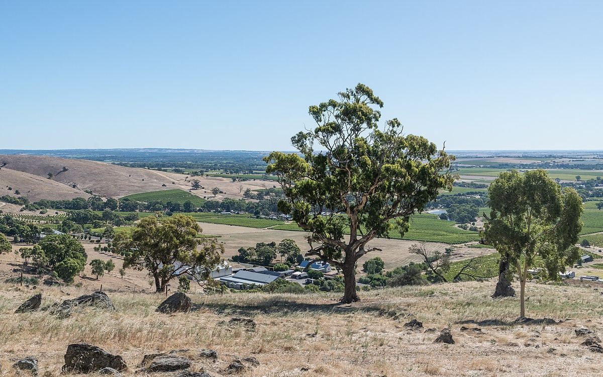

Australia
Australia es uno de los grandes productores del Nuevo Mundo, con regiones que van desde los valles cálidos de Australia Meridional hasta la isla fresca de Tasmania. Es conocida sobre todo por su Shiraz, pero también por sus Cabernet Sauvignon, Chardonnay, Riesling y Semillon.

Historia
Las primeras vides llegaron a Australia con la Primera Flota, que desembarcó en 1788 en la bahía de Sídney para fundar la colonia penal de Nueva Gales del Sur. Los primeros intentos tuvieron poco éxito por el clima húmedo de la costa, pero el cultivo se extendió en las décadas siguientes. Un papel destacado correspondió a James Busby, que en la década de 1830 reunió en Europa una amplia colección de variedades y la llevó a la colonia; muchas de esas plantas se cultivaron en el valle del Hunter. En la década de 1840 llegaron a Australia Meridional colonos luteranos procedentes de Silesia y Prusia, que se asentaron en el valle del Barossa y dieron forma a una cultura vitícola que aún perdura.
En la segunda mitad del siglo XIX la filoxera devastó buena parte del viñedo de Victoria, pero Australia Meridional aplicó estrictas medidas de cuarentena y se mantuvo libre de la plaga. Por eso conserva hoy algunas de las viñas en producción más antiguas del mundo, plantadas en pie franco. Durante buena parte del siglo XX la producción estuvo dominada por vinos generosos de tipo oporto y jerez, destinados en gran medida al mercado británico. A partir de los años cincuenta y sesenta el consumo se desplazó hacia los vinos de mesa; tintos como Penfolds Grange, cuya primera cosecha experimental es de 1951, marcaron ese cambio. En las últimas décadas del siglo Australia se convirtió en un gran exportador, conocido por vinos varietales de fruta generosa, y desde entonces muchos productores se han orientado hacia estilos más frescos y hacia la expresión de cada región.
Clima y suelos
Casi todo el viñedo se concentra en el sureste del país, en Australia Meridional, Victoria y Nueva Gales del Sur, con un núcleo importante en el suroeste de Australia Occidental y en Tasmania. Muchas zonas tienen un clima cálido y seco de tipo mediterráneo, y en las grandes llanuras del interior, a lo largo de los ríos Murray y Murrumbidgee, el riego permite producir grandes volúmenes. Las regiones de calidad buscan la influencia moderadora del océano, la altitud o la latitud: Coonawarra, Margaret River, el valle del Yarra, las colinas de Adelaida o Tasmania tienen climas mucho más frescos que el Barossa o McLaren Vale. Los suelos son en general muy antiguos y variados; entre los más conocidos figura la terra rossa sobre caliza de Coonawarra.
Variedades y estilos
La Syrah, llamada aquí Shiraz, es la uva emblemática del país. Da tintos generosos y especiados en el Barossa y McLaren Vale, y versiones más frescas y pimentadas en zonas templadas. El Cabernet Sauvignon brilla en Coonawarra y Margaret River, y la mezcla de Cabernet y Shiraz es una tradición australiana. La Garnacha y la Monastrell, llamada localmente Mataro, se cultivan desde el siglo XIX y han ganado prestigio a partir de viñas viejas. Entre las blancas, el Chardonnay se elabora en todo el país, el Riesling seco de los valles de Clare y Eden es un estilo propio, y el Semillon del valle del Hunter es uno de los blancos más singulares del Nuevo Mundo. Tasmania y otras zonas frescas producen Pinot Noir y espumosos de método tradicional. Australia fue también pionera en el uso generalizado del tapón de rosca, impulsado en el año 2000 por un grupo de productores de Riesling del valle de Clare.
Normativa
El sistema de Indicaciones Geográficas (GI), gestionado por Wine Australia, delimita el territorio en estados, zonas, regiones y subregiones, sin imponer variedades ni métodos de elaboración. Si la etiqueta menciona una región, una variedad o una añada, al menos el 85 % del vino debe corresponder a lo indicado. Existe además una amplia indicación, South Eastern Australia, que permite mezclar uvas de varios estados y se usa para muchos vinos de gran volumen.
Regiones y denominaciones
Barossa Valley
Indicación Geográfica (GI) · El valle del Barossa, al noreste de Adelaida, es la región más emblemática de Australia para el Shiraz. Conserva viñas muy antiguas en pie franco y una fuerte herencia cultural de los colonos de origen alemán.
McLaren Vale
Indicación Geográfica (GI) · McLaren Vale, al sur de Adelaida y junto al golfo de San Vicente, es una de las regiones históricas de Australia Meridional. Destaca por sus Shiraz y Garnachas de viñas viejas y por una gran diversidad geológica.
Clare Valley
Indicación Geográfica (GI) · El valle de Clare, en el norte de las Mount Lofty Ranges de Australia Meridional, es una de las grandes referencias mundiales del Riesling seco. También produce Shiraz y Cabernet Sauvignon de buena estructura.
Eden Valley
Indicación Geográfica (GI) · El valle de Eden ocupa las colinas orientales del Barossa, a mayor altitud que el fondo del valle. Su clima más fresco da Riesling de gran finura y Shiraz elegantes, entre ellos algunos de los tintos más célebres de Australia.
Coonawarra
Indicación Geográfica (GI) · Coonawarra, en el sureste de Australia Meridional, es famosa por una estrecha franja de terra rossa sobre caliza. Es la región australiana más asociada al Cabernet Sauvignon.
Hunter Valley
Indicación Geográfica (GI) · El valle del Hunter, en Nueva Gales del Sur, es una de las regiones vitícolas más antiguas de Australia. Es célebre por su Semillon, ligero y longevo, y por un Shiraz de cuerpo medio.
Yarra Valley
Indicación Geográfica (GI) · El valle del Yarra, al este de Melbourne, fue la cuna de la viticultura en Victoria. Hoy es una de las regiones de clima fresco más reputadas de Australia por su Chardonnay, su Pinot Noir y sus espumosos.
Margaret River
Indicación Geográfica (GI) · Margaret River, en el extremo suroeste de Australia Occidental, es una región joven que se ha consolidado como una de las mejores del país para el Cabernet Sauvignon y el Chardonnay.
Tasmania
Indicación Geográfica (GI) · Tasmania, la isla situada al sur del continente australiano, es la región vitícola más fresca del país. Se ha hecho un nombre con sus espumosos de método tradicional, su Pinot Noir y su Chardonnay.
Adelaide Hills
Indicación Geográfica (GI) · Región de altura en los montes Mount Lofty, justo al este de Adelaida, en Australia Meridional. Su clima fresco la ha convertido en una referencia australiana para el Sauvignon Blanc, la Chardonnay, la Pinot Noir y los espumosos.
Riverina
Indicación Geográfica (GI) · Gran región de regadío del interior de Nueva Gales del Sur, en torno a Griffith y al río Murrumbidgee. Produce enormes volúmenes de vino de consumo corriente y es famosa por sus Semillon dulces botritizados.
Mudgee
Indicación Geográfica (GI) · Región histórica de Nueva Gales del Sur, en la vertiente occidental de la Gran Cordillera Divisoria. De clima continental y viñedos en altura, es conocida por tintos de Cabernet Sauvignon y Shiraz y por sus Chardonnay.